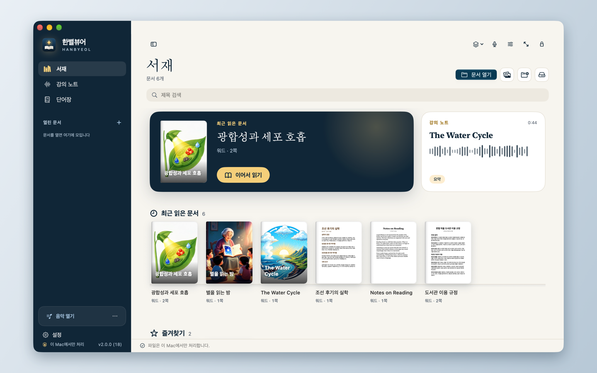
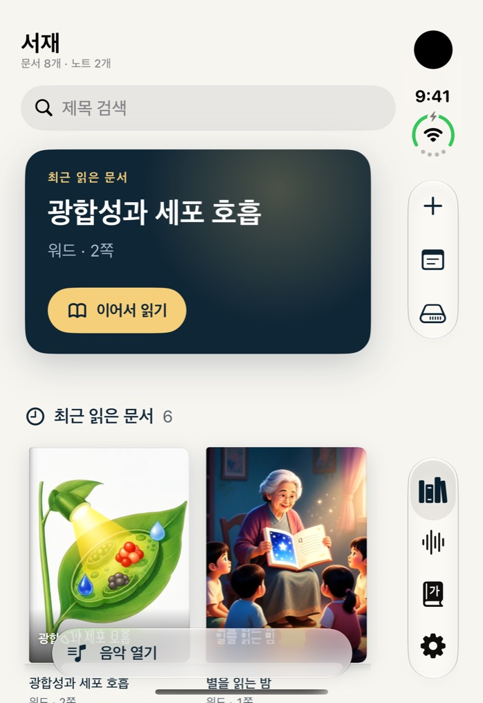
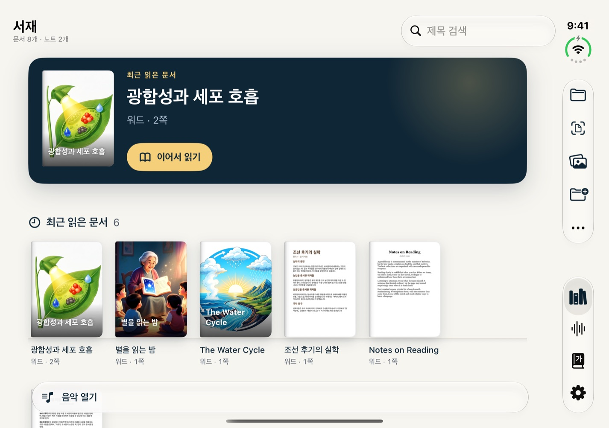
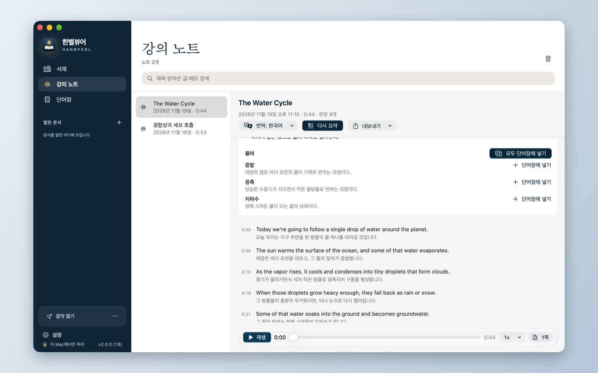
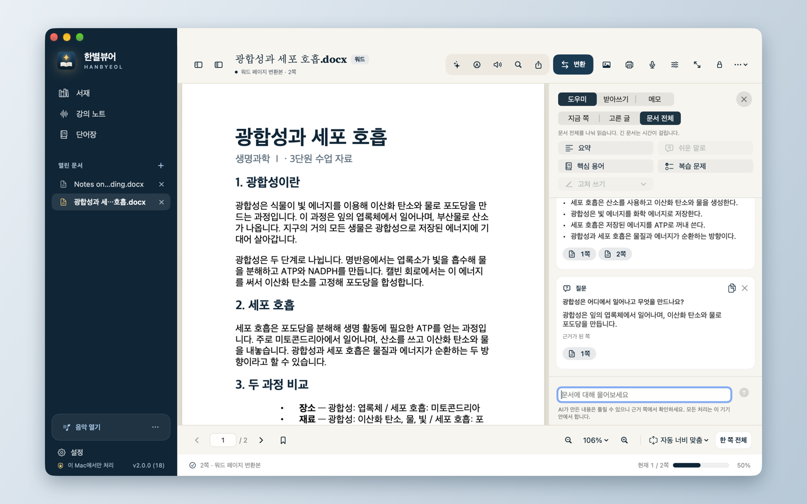
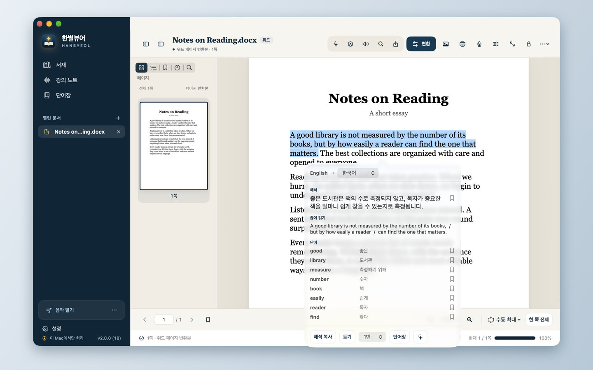
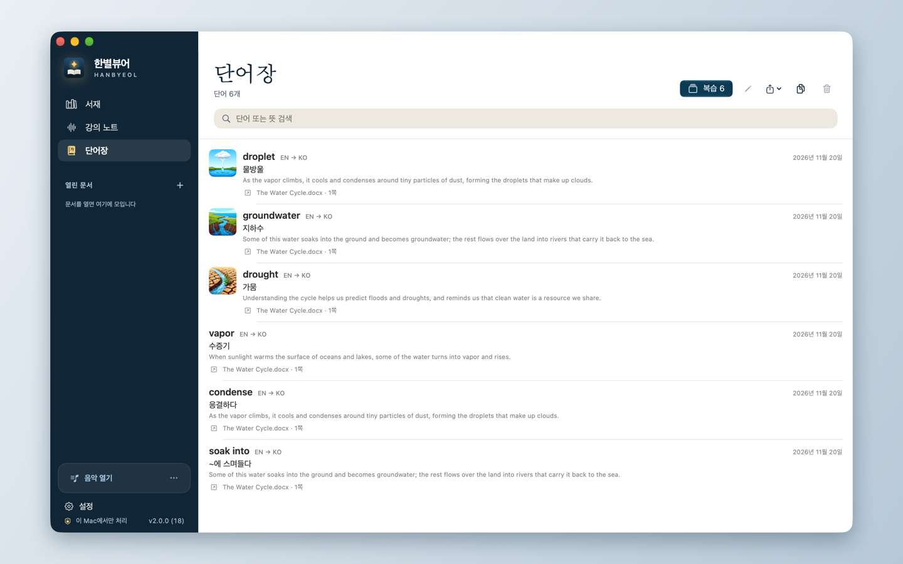

맥에서 한글(HWP·HWPX) 파일을
여는 뷰어, 한별뷰어
맥북에서 한글 파일이 안 열릴 때 쓰는 무료 뷰어입니다. HWP·HWPX와 PDF를 열고, PDF로 바꿔 저장하고, 수업을 녹음해 받아 적고, 소리로 듣고, 모르는 문장은 그 자리에서 번역합니다. 2.1부터 아이폰(접는 아이폰 듀오 포함)·아이패드에서도 같은 앱으로 씁니다.
App Store에서 무료로 받기무료 · 광고 없음 · 계정 없음 · macOS 26 이상(Apple 실리콘 Mac) · iOS 26·iPadOS 26 이상(아이폰·아이패드)

아이폰·아이패드, 접는 아이폰 듀오까지
2.1부터 같은 앱을 아이폰과 아이패드에서도 씁니다. 접는 아이폰 듀오에서는 접으면 한 화면, 펼치면 넓은 화면에 맞춰 바뀌고, 읽던 쪽은 그대로 이어집니다. 만화는 펼치면 두 쪽으로 봅니다.


아이폰 듀오 시뮬레이터에서 찍은 화면입니다.
맥북에서 한글 파일 열기 (HWP·HWPX)
맥북에 한글(한컴오피스)이 없어도 한글 파일을 바로 엽니다. 메일이나 공문으로 받은 HWP, 요즘 많이 쓰는 HWPX 모두 됩니다.
- HWP · HWPX · PDF · 워드(DOCX · DOC · RTF) 열기
- 서재: 최근 문서·즐겨찾기·문서함이 선반별로 놓이고, 어디까지 읽었는지 표시
- 너비 맞춤, 페이지 전체, 두 쪽 보기, 글자만 크게 읽는 텍스트 읽기
- 목차(없으면 편·장·절·조 제목을 찾아 자동으로 만듦), 책갈피, 문서 안 검색
- 형광펜, 밑줄, 메모
- 메모 모아보기: 모든 문서의 형광펜·밑줄·메모를 한곳에서 찾고 Markdown·텍스트 파일로 내보내기
- 암호가 걸린 PDF도 암호를 입력해 열기
수업 녹음과 받아쓰기
문서 옆 녹음 모드에서 수업을 녹음하면 Mac 안에서 문장으로 받아 적습니다. 그때 보던 쪽도 함께 기록해, 강의 노트에서 문장을 누르면 그 부분부터 다시 듣고 그 쪽이 열립니다.
- 녹음하면서 받아쓰기, 보던 쪽 기록
- 문장을 눌러 그 부분부터 다시 듣기
- 문장마다 번역 붙이기
- Apple Intelligence로 핵심과 용어를 정리하고, 용어는 단어장에 넣기
- 텍스트·Markdown·PDF·한글(HWPX)·워드로 내보내기

Apple Intelligence 도우미: 요약과 질문
지금 쪽, 고른 글, 문서 전체를 요약하고, 문서에 대해 물은 것에 근거가 된 쪽과 함께 답합니다. Mac 안의 모델로 처리하므로 문서가 서버로 가지 않습니다.
- 지금 쪽 · 고른 글 · 문서 전체 요약
- 질문하면 근거가 된 쪽과 함께 답함
- 쉬운 말로, 핵심 용어, 복습 문제, 고쳐 쓰기
- 답은 새 문서로 저장(원본 파일은 고치지 않음)
- Apple Intelligence를 켠 Mac에서 쓸 수 있습니다

HWP를 PDF로, PDF를 한글·워드로 변환
변환 사이트에 파일을 올리지 않습니다. 변환은 Mac 안에서 이루어지므로 회사 문서나 개인 서류도 밖으로 나가지 않습니다.
- HWP · HWPX → PDF 변환
- PDF → 한글(HWPX), 워드(DOCX)로 저장
- 여러 파일 한꺼번에 변환(일괄 변환)
- 쪽 추출, PDF 합치기
- 암호 PDF: 열 때 암호를 묻는 PDF 사본 저장
- AirDrop, 메일, 메시지로 공유
한글·PDF 문서 읽어주기(TTS)
문서를 소리 내어 읽어 줍니다. 긴 보고서나 PDF 전자책을 눈으로 따라가지 않고 들을 수 있습니다.
- 한국어 목소리 10가지, 속도 조절
- 읽는 문장 표시: 지금 읽는 문장을 문서 위에 노란색으로 표시
- 취침 타이머: 정한 시간 뒤, 또는 이 쪽·이 장이 끝나면 멈춤
- 내 음악 파일을 틀어 놓고 PDF 전자책이나 만화 읽기
PDF 번역과 단어장
영어 PDF를 읽다가 글자를 선택하면 해석과 낱말 뜻이 바로 나옵니다. 번역도 Mac 안에서 처리합니다.
- 선택한 문장의 해석과 낱말 뜻 표시
- 끊어 읽기: 긴 영어 문장을 뜻 단위로 끊어 표시
- 낱말과 문장을 단어장에 저장
- 글을 쓰면 옆에 번역이 나오는 번역 문서

단어장 복습 카드와 학습지
모은 낱말과 문장을 복습 카드로 외우고, 학습지로 인쇄해 직접 써 봅니다.
- 복습 카드: 발음 기호와 뜻을 보고 다시·어려움·좋음·쉬움을 고르면 다음 복습 날이 정해짐
- 단어 학습지: 저장한 단어를 A4 학습지로 PDF 저장하거나 인쇄(뜻을 빼고 빈 줄 가능)
- Anki로 내보내기
- 낱말에 Image Playground로 만든 그림 붙이기
- 그 단어를 저장한 문서의 그 쪽으로 이동, 실수로 지운 단어 되돌리기

맥북 쓰는 대학생에게: 한글 없이 과제·논문 보기
교수님이 올린 한글 파일이 맥북에서 안 열릴 때, 한컴오피스를 사거나 설치하지 않아도 됩니다. 받은 자료를 열어 보고, PDF로 바꿔 내고, 영어 논문은 모르는 문장만 번역하며 읽을 수 있습니다.
한글 없이 HWP 열기
강의 자료, 공지, 기출 자료로 받은 한글 파일을 맥북에서 바로 봅니다. 무료이고 계정도 필요 없습니다.
과제는 PDF로 제출
한글 파일을 PDF로 바꾸고, PDF 여러 개를 하나로 합칩니다. 파일을 변환 사이트에 올리지 않습니다.
수업 녹음과 받아쓰기
수업을 녹음하면 받아 적고, 그때 보던 강의 자료의 쪽도 기록합니다. 복습할 때 문장을 눌러 그 부분부터 다시 듣습니다. 녹음 전에는 강사와 학교의 규칙을 확인해 주세요.
논문·전공책 PDF 번역
영어 논문을 읽다가 막히는 문장만 선택하면 해석과 낱말 뜻이 나옵니다. 문서 전체를 한 번에 번역하지는 않습니다.
AI 요약과 복습 문제
Apple Intelligence를 켠 Mac에서는 도우미가 강의 자료를 요약하고 핵심 용어와 복습 문제를 만듭니다. 답에 붙은 쪽에서 내용을 확인할 수 있습니다.
PDF 읽어주기
한글로 된 강의 자료와 논문 PDF를 소리로 듣습니다. 음성은 한국어에 맞춰져 있습니다.
PDF 형광펜과 메모
중요한 곳에 형광펜과 밑줄을 긋고 메모를 답니다. 책갈피와 문서 안 검색으로 시험 범위를 빨리 찾습니다.
영어 단어장
모르는 낱말과 문장을 단어장에 모읍니다. 복습 카드로 외우고, 뜻을 가린 학습지로 인쇄해 직접 써 보거나 Anki로 내보낼 수 있습니다.
서재에서 과목별 정리
문서함으로 자료를 과목별로 나누고, 즐겨찾기와 최근 문서를 선반에서 바로 엽니다. 어디까지 읽었는지도 보입니다.
그 밖의 기능
Finder에서 HWP 미리보기
HWP·HWPX 파일을 고르고 스페이스 바를 누르면 열지 않고 미리 봅니다. 파일 아이콘에도 첫 쪽이 보입니다.
만화 뷰어
CBZ · CBR · 이미지 폴더를 두 쪽 펼침이나 세로 이어 보기로 읽습니다.
앱 잠금
앱을 열 때 Touch ID나 Mac 로그인 암호로 확인합니다. 문서 위쪽의 자물쇠 버튼으로 바로 잠글 수 있습니다.
개인정보
계정도 광고도 없고, 수집하는 정보가 없습니다. 변환·읽어주기·번역·받아쓰기·요약·도우미 모두 Mac 안에서 처리합니다.
그림 만들기
Image Playground로 서재 표지와 단어장 낱말에 그림을 만들어 붙입니다. 기기 안에서 만드는 그림체만 씁니다.
문서 이름 바꾸기
서재에서 문서 이름을 알아보기 쉽게 바꿉니다. 원본 파일의 이름은 그대로 둡니다.
자주 묻는 질문
맥에서 HWP 파일은 어떻게 여나요?
Mac App Store에서 한별뷰어를 받은 뒤, Finder에서 HWP 파일을 오른쪽 클릭해 ‘다음으로 열기 → 한별뷰어’를 고르면 됩니다. 한컴오피스가 없어도 열립니다.
맥북에서 한글 파일을 편집할 수 있나요?
아니요. 한별뷰어는 읽는 앱이라 문서를 고치는 기능이 없습니다. 내용을 고쳐야 하면 워드(DOCX)로 저장해 다른 앱에서 고칠 수 있습니다. 이때 글자만 들어가고 표와 배치는 빠집니다.
HWP를 PDF로 변환하려면 어떻게 하나요?
문서를 연 뒤 PDF로 저장하면 됩니다. 여러 파일을 한꺼번에 바꿀 수도 있습니다. 파일을 인터넷에 올리지 않고 Mac 안에서 변환합니다.
HWPX 파일도 열리나요?
네. HWP와 HWPX를 모두 엽니다. PDF와 워드(DOCX·DOC·RTF), 만화(CBZ·CBR)도 엽니다.
무료인가요?
네, 무료입니다. 광고도 없고 계정을 만들 필요도 없습니다.
아이폰이나 아이패드에서도 쓸 수 있나요?
네. 2.1부터 아이폰과 아이패드에서도 씁니다. Mac과 같은 앱이라 같은 App Store 링크에서 무료로 받습니다. 접는 아이폰 듀오(iPhone Duo)에서는 접으면 한 화면, 펼치면 넓은 화면에 맞춰 바뀌고, 읽던 쪽은 그대로 이어집니다. 만화는 펼치면 두 쪽으로 봅니다.
안 열리는 한글 파일도 있나요?
암호가 걸렸거나 DRM·배포용으로 잠긴 한글 문서는 열지 못합니다. 암호가 걸린 PDF는 암호를 입력해 열 수 있습니다.
맥북에 한글(한컴오피스)이 없어도 한글 파일을 볼 수 있나요?
네. 한별뷰어는 한글(한컴오피스) 없이 HWP·HWPX 파일을 엽니다. 무료이고, 한컴오피스를 사거나 설치할 필요가 없습니다. 다만 보기와 변환만 되고 편집은 안 됩니다.
맥북에서 한글 파일이 안 열릴 때는 어떻게 하나요?
macOS에는 한글 파일을 여는 앱이 들어 있지 않아서 그렇습니다. 한별뷰어를 설치한 뒤 파일을 오른쪽 클릭해 ‘다음으로 열기 → 한별뷰어’를 고르세요. 암호가 걸렸거나 DRM·배포용으로 잠긴 문서는 열리지 않습니다.
한글 파일을 PDF로 바꿔 과제로 제출할 수 있나요?
네. 문서를 열고 PDF로 저장하면 됩니다. PDF 여러 개를 하나로 합칠 수도 있습니다. 내용을 채워 넣어야 하는 과제 양식은 한별뷰어에서 고칠 수 없으므로, 워드(DOCX)로 저장해 다른 앱에서 작성해야 합니다. 이때 글자만 들어가고 표와 배치는 빠집니다.
영어 논문 PDF를 번역해 주나요?
읽다가 선택한 문장의 해석과 낱말 뜻을 보여 줍니다. 문서 전체를 한 번에 번역하지는 않습니다. 번역은 Mac 안에서 처리합니다.
수업을 녹음해 받아 적을 수 있나요?
네. 문서 옆 녹음 모드에서 수업을 녹음하면 Mac 안에서 문장으로 받아 적고, 그때 보던 쪽도 함께 기록합니다. 강의 노트에서 문장을 누르면 그 부분부터 다시 듣습니다. 녹음하기 전에 강사와 학교의 규칙을 확인해 주세요.
AI로 문서를 요약할 수 있나요?
Apple Intelligence를 켠 Mac에서는 도우미가 지금 쪽이나 문서 전체를 요약하고, 문서에 대해 물은 것에 근거가 된 쪽과 함께 답합니다. Mac 안의 모델로 처리해 문서를 서버로 보내지 않습니다. AI가 만든 내용은 틀릴 수 있으니 답에 붙은 쪽에서 확인해 주세요.
PDF를 읽어주는 기능이 있나요?
네. PDF와 한글 문서를 소리로 읽어 줍니다. 음성은 한국어에 맞춰져 있어 한글로 된 문서에 알맞습니다.
알아 두실 점
- Mac은 macOS 26 이상(Apple 실리콘), 아이폰·아이패드는 iOS 26·iPadOS 26 이상이 필요합니다.
- 문서를 고치는 편집 기능은 없습니다.
- 워드로 저장하면 글자만 들어가고 표와 배치는 빠집니다.
- 읽어주기 음성은 한국어에 맞춰져 있습니다.
- 도우미, 강의 요약, 그림 만들기는 Apple Intelligence를 켠 Mac에서 쓸 수 있습니다.
- AI가 만든 내용은 틀릴 수 있습니다. 답에 붙은 쪽에서 확인해 주세요.
- 받아쓰기는 Mac이 지원하는 언어에서 됩니다. 처음 쓰는 언어는 음성 모델을 내려받습니다.
- 강의를 녹음하기 전에 강사와 학교의 규칙을 확인해 주세요.
- 앱 잠금은 앱 화면만 가립니다. 파일 자체는 잠그지 않습니다.
- 암호 PDF의 암호는 잊으면 되찾을 수 없습니다.
- 한컴오피스가 설치된 Mac에서는 Finder 미리 보기에 한컴오피스의 미리 보기가 나옵니다.
- 인터페이스 언어: 한국어, 영어, 일본어, 중국어(간체), 러시아어, 스페인어
개인정보 처리방침
한별뷰어는 사용자의 개인정보를 수집하지 않습니다. 계정을 만들지 않고, 사용 기록이나 기기 정보를 모으지 않으며, 광고나 분석 도구를 넣지 않았습니다. 사용자가 연 문서와 책갈피·메모·단어장, 강의 녹음과 받아쓴 글은 Mac 안 앱 전용 폴더에만 저장하고 외부 서버로 보내지 않습니다.